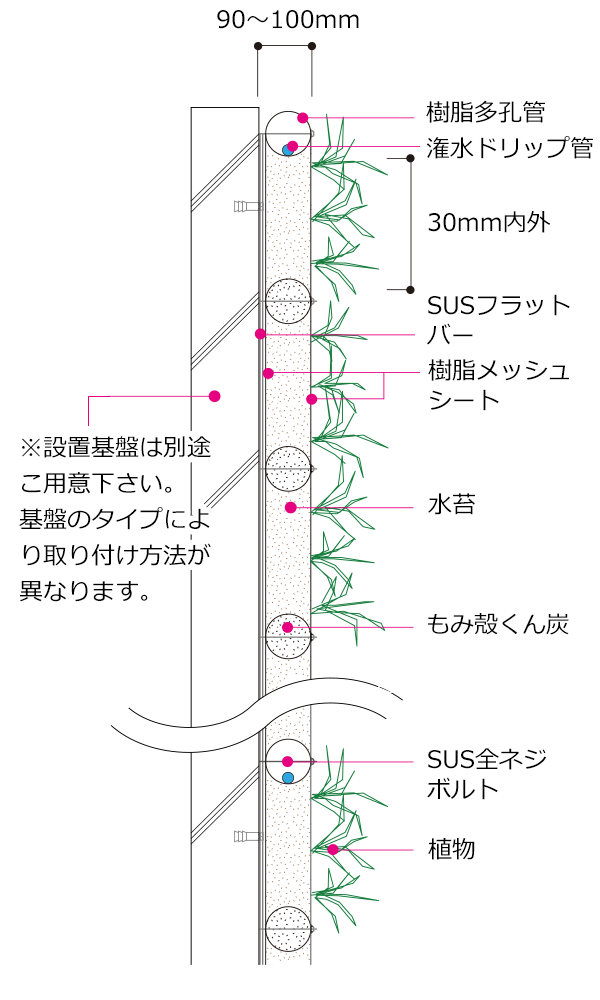
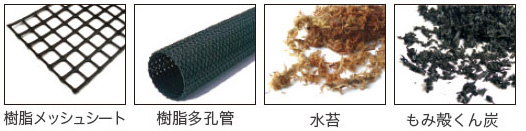
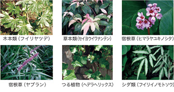
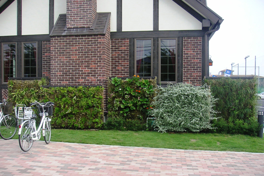
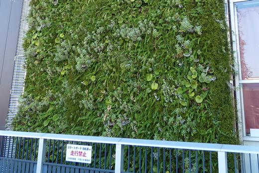
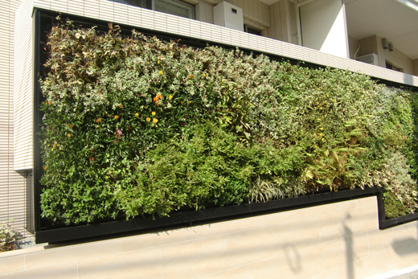
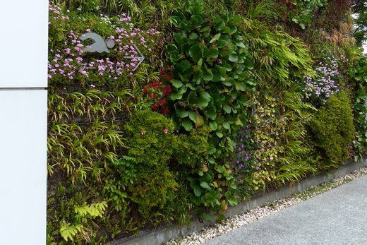

壁面緑化工法
Earth Wall
多品種植栽の壁面緑化
システム「アースウォール」
都市における垂直面の緑化は、人工的な景観に潤いを与え、
ヒートアイランド現象の緩和や生物多様性の保全に貢献します。
当社独自の壁面緑化工法である「アースウォール」は、
連続した基盤で曲面施工を可能とした多品種植栽の壁面緑化システムです。
壁面緑化工法
（特許取得済み 特許第3651893 号）
製品の特徴
- 軽量であるため施工が容易
- ミズゴケを基板材に用いることで薄層の壁面緑化を実現しました。また、植栽基盤の湿潤時重量は約60kg/㎡と軽量です。
- アースウォールの形状は自由
- 柔軟な基盤のため縦横の長さや曲面など様々な形状が可能です。また、構成資材は既製品を活用しているため施工費を低減し、全国どこでも調達が可能です。
- 生物多様性に配慮した植栽が可能
- 連続した基盤により、根が自由に伸長できることから植物に負担をかけない自然な育成環境を実現しています。それにより多様な植物による植栽が可能です。
- 自由な配植ライン、密度の自由設定が可能
- 基盤の仕切りが無いため、模様や曲線などの自由な植栽デザインが実現します。また㎡当たりのポット数量が40〜90potとシーンに合わせた密度設定が可能です。
- 豊富な施工実績
- 日本全国80ヶ所以上に設置を行い、10年以上の実績があります。
（2003年〜2013年2月末現在）

製品の構成資材

植栽事例

潅水（水やり）について
自動潅水装置により水やりを制御します。季節ごとに適した水量、適した時間に潅水します。
また、点滴型のドリップ管を使用することで植物に安定した水量の潅水が可能になります。

アースウォール施工事例
-

戸建住宅
-

商業施設
-

集合住宅
-

公共施設